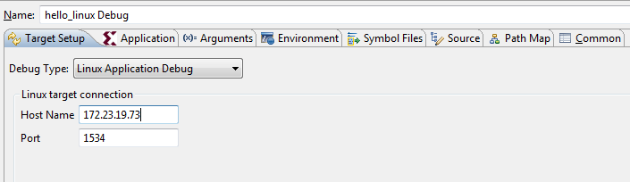
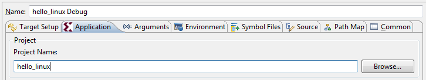
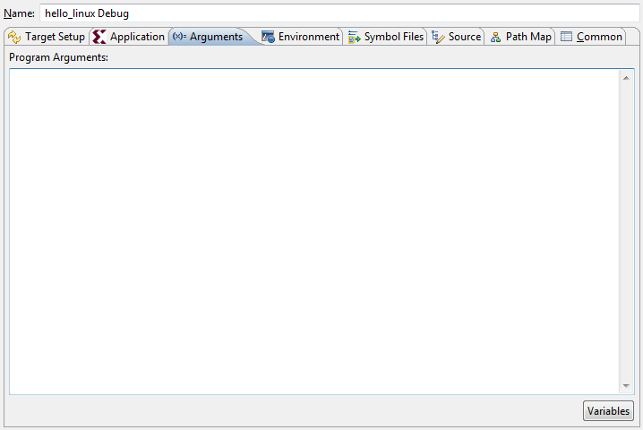
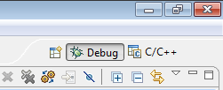
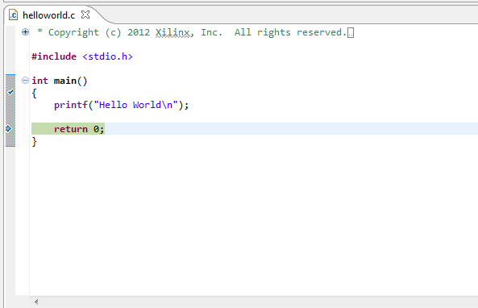

Click Xilinx C/C++ application (System Debugger) to create
a new configuration.
In the Debug Configuration window:
Click the Target Setup tab.
From the Debug Type drop-down list, select Linux Application
Debug.
Provide the Linux host name or IP address in the
Host Name field.

By default, tcf-agent runs on the 1534 port on the
Linux. If you are running tcf-agent on a different port, update the Port
field with the correct port number.
In the Application Tab, click Browse and select the project
name. SDK automatically fills the information in the application.

In the Remote File Path field, specify the
path where you want to download the application in Linux.
If your application is expecting some arguments,
specify them in the Arguments tab.

If your application is expecting to set some environment
variables, specify them in the Environments tab.
Click the Debug button. A separate console
automatically opens for process standard I/O operations.


Click the Terminate button to terminate the application.